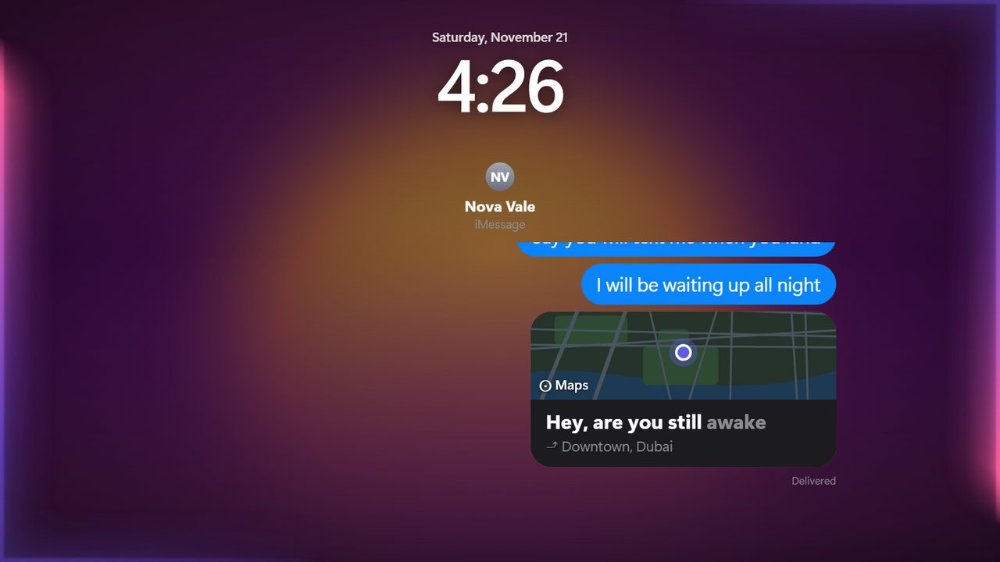
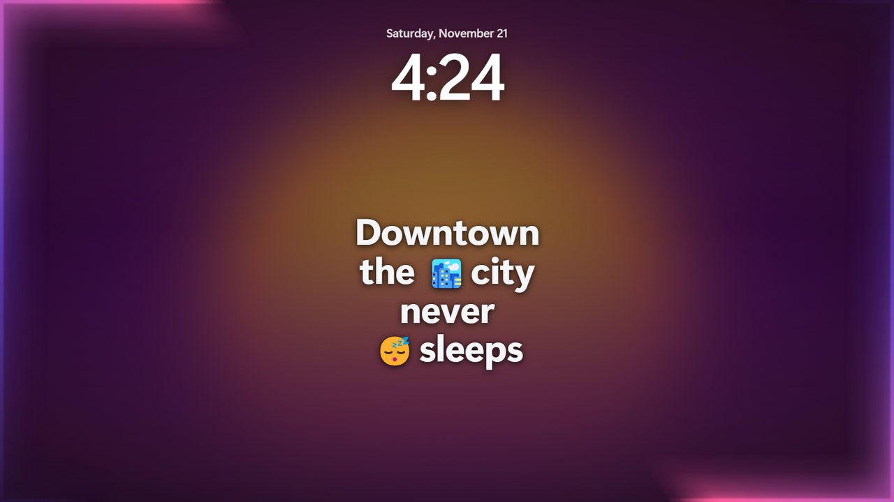
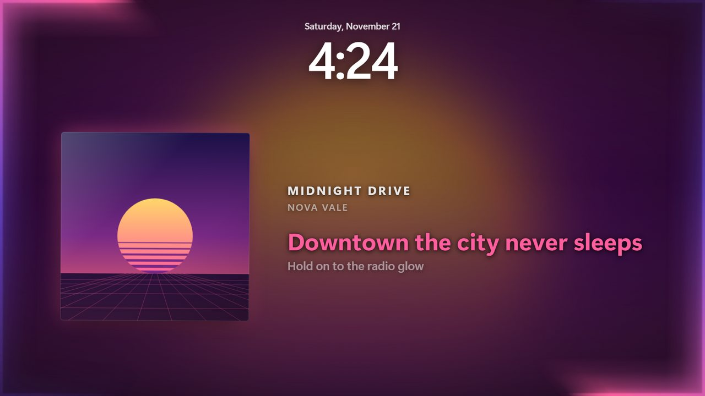
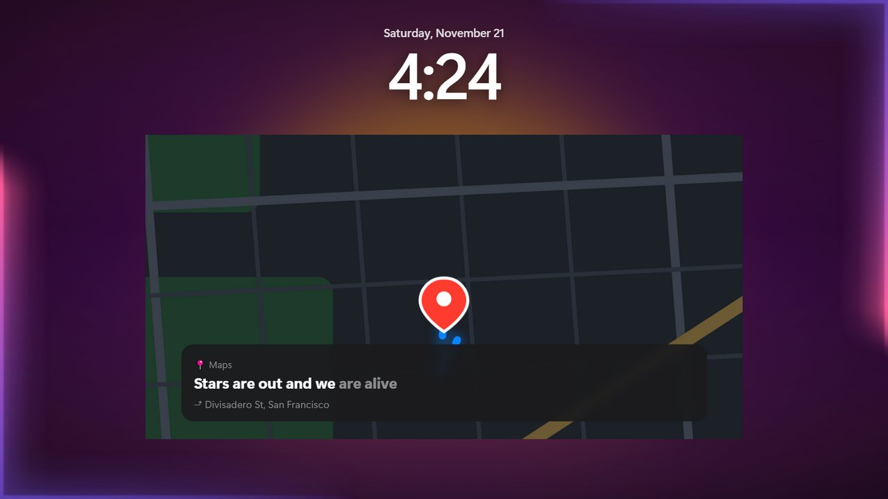
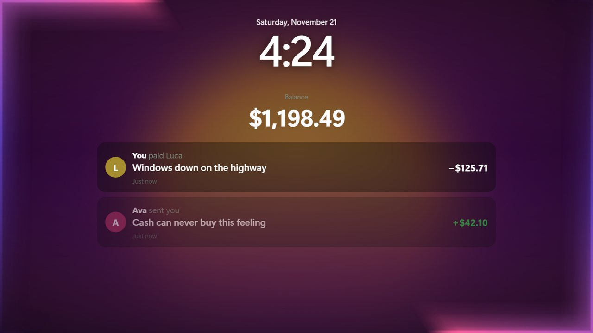
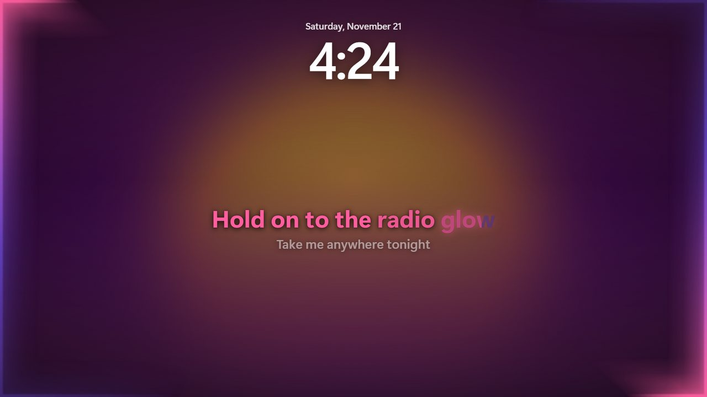
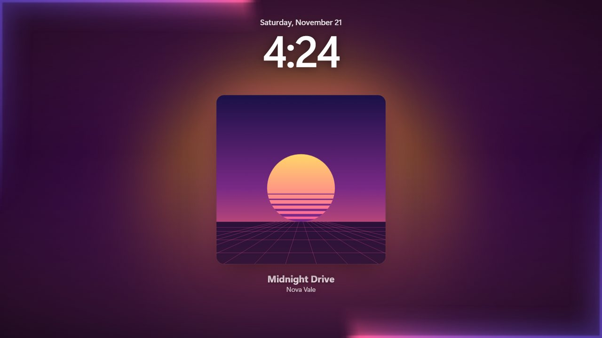
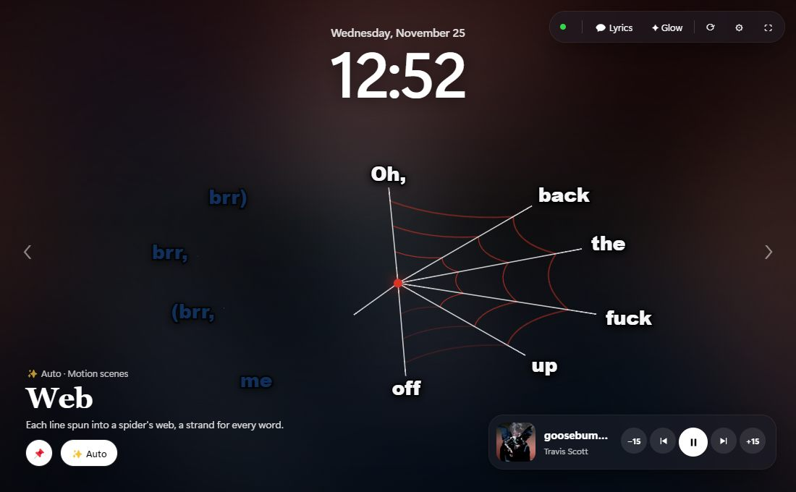
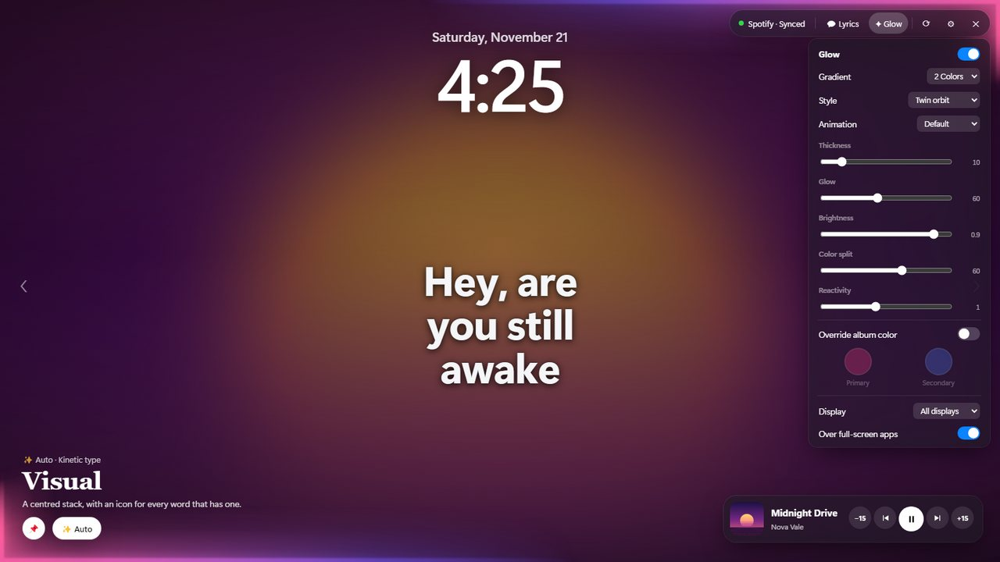

Synced lyrics that light up your whole screen.
Auralyrics turns whatever you're playing into full-screen, word-by-word synced lyrics, wrapped in an ambient glow that takes its colours from the album cover and moves with the beat.

Everything your music app leaves out
Lyrics that move with the song, a screen that matches the cover, and nothing to set up.
Synced word by word
Words light up as they're sung, using real per-word timing when a song has it and smart estimates when it doesn't.
17 lyric styles
Kinetic type, motion scenes, iPhone-style Messages, Money and Maps screens, classic layouts and a cover-art poster.
Auto style
Reads each song and picks the style that suits it, from its pace to what it's about, so every track looks different.
Ambient glow
A rim of light in the album's two strongest colours, with Twin orbit comets circling your screen to the beat.
Click the cover
Tap the small cover in full screen to see it big, tap again to bring the lyrics back.
Private by design
Reads Windows media controls locally. Audio is analysed on your PC for the beat and never recorded or uploaded.
One song, seventeen ways to see it
From a message thread to a payments feed to a map with a pin for every line.






Auto picks the style for you
Nobody wants to browse a menu mid-song. Auralyrics reads the lyrics, chooses for you, and keeps changing the look as the song plays.
- Pace and line length. Fast, clipped tracks lean kinetic; slow, long lines lean calm.
- What the song's about. Money, places, the night sky, texting and calling.
- The time of day. Late at night it leans towards quieter styles.
- Never predictable. It picks at random, weighted by fit, and never repeats the style on screen.


A glow that follows the album
Five styles, led by Twin orbit: two comets circling the edge of your screen in the cover's strongest colours.
| Style | Look |
|---|---|
| Twin orbit | Two comets circling the edge |
| Orbit | One comet circling the edge |
| Rim | The whole edge lit evenly |
| Corners | Four corner blooms |
| Top & bottom | Top and bottom only |
Questions
Which music players does it work with?
Spotify, Apple Music, YouTube and YouTube Music in a browser, and any app that shows up in Windows media controls.
Do I need an account?
No. There is no sign-in and nothing to connect. Auralyrics reads what Windows says is playing.
Where do the lyrics come from?
From LRCLIB, a free and open lyrics database. When a song has real per-word timing it's used; otherwise timing is estimated within each line. Very new or niche releases are sometimes missing, but the glow still works.
Does it record my audio?
No. It reads the PC's audio output locally to find the beat. It never uses the microphone, and no audio leaves your computer.
What is sent over the network?
Only the song title, artist and length, to LRCLIB, to find the lyrics.